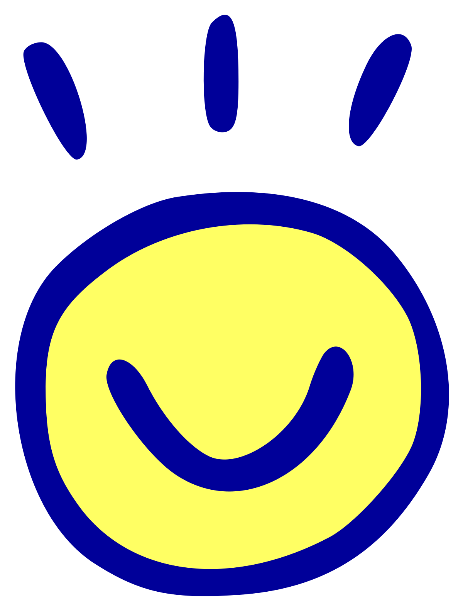

Yes, this page is unlisted, but not private. It contains all sublinks from all parts of this site. If you're interested in reading a bunch of definitions, this page is for you. Otherwise, go back to where you came from. You've been warned.
The decimal number system, also known as base ten, is a place value system based on the number 10.
Since you're reading this in English, it's very statistically likely that you use this system regularly.
In this system, each place has 10 times the value of the place before it. (Y'know, "hundreds," "thousands," "units")
Usually called senary, the seximal system is based on the number six.
It only uses the digits 0-5 to express numbers, and each place value is six times the previous. In this system, the number six is written as 10
The name "seximal" was coined by jan Misali.
1/7th is 0.142857 repeating, 1/3rd is 0.3 repeating, and 1/9th is 0.1 repeating.
1/11th is 0.05 repeating, 1/3rd is 0.2, and 1/13th is 0.04
Thirsy-three. Fifsy-two. Five. Thirsy-four. Foursy-two. Dozen-two. Six. Nine.
toki pona is a :constructed language made by Canadian linguist Sonja Lang using principles of minimalism and Taosim.
The original book released with 120 words, the second book with 137, and most people use around 137 (though not the same words as are in the second book).
I am a fluent speaker of toki pona. mi jan pi toki pona.
A conlang, short for constructed language, is a language created by a person or group of people for the purpose of :international communication, :linguistic colonialism, fantasy, to test a linguistic theory, or just for fun.
I am a lover and maker of conlangs. I am fluent in toki pona (mi jan pi toki pona) and am learning fluency in one of my own conlangs, Deutskhelpspraak (Ig spraak Deutskhelpspraak.).
If you couldn't tell, the linking of Esperanto to "linguistic colonialism" was a jab at Esperanto.